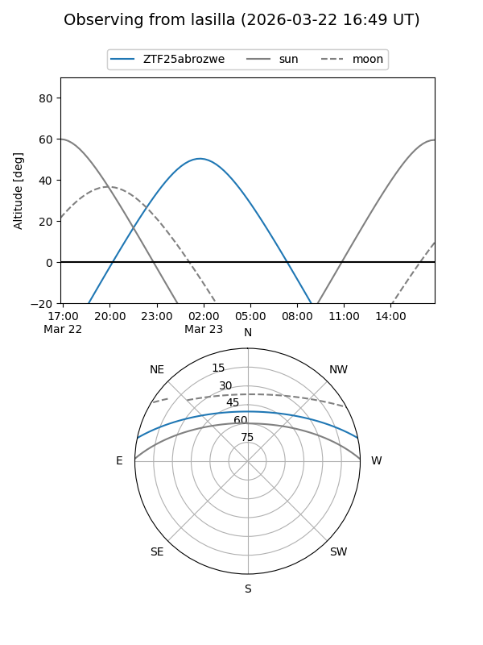
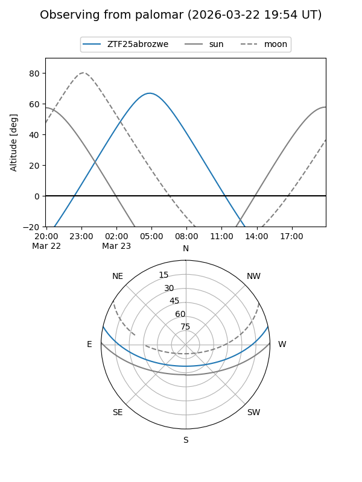

ZTF25abrozwe
Target ZTF25abrozwe at 2026-03-23 08:23
Aliases and brokers:
FINK: link
Lasair: link
ALeRCE: link
alt names
ZTF25abrozwe (ztf,fink_ztf)
Coordinates:
equatorial (ra, dec) = 136.0690,+10.42321
equatorial (HMS+DMS) = 09:04:16.56,+10:25:23.55
galactic (l, b) = (218.8025,+34.18731)
Flags:
Photometry:
last ztfg=17.73
1 ztfg detections
Lightcurve
Visibility


Additional plots